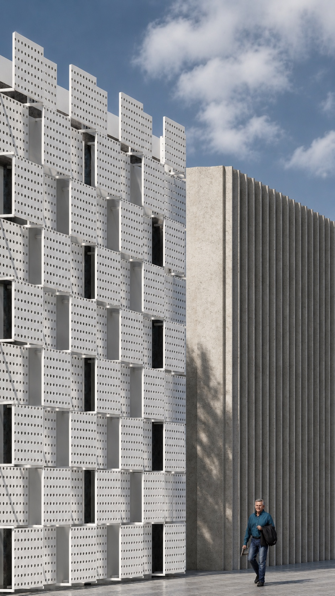

Architect — Istanbul, Turkiye
Cavid Balayev
Istanbul-based architect with 1.5+ years of professional experience, contributing to cultural, residential and social-housing developments alongside infrastructure projects, from design through on-site construction. Currently Site Architect on the Kent Etiler residential development, built in partnership with Mesa and ASL, supervising structural works, quality control and on-site delivery.
Pairs hands-on site execution — formwork, reinforcement and concrete works, in-situ quality control, and contractor coordination — with construction documentation and high-quality architectural visualisation, applying commercial awareness across quantity take-offs and progress payments.
Work permit holder — eligible to work in Turkiye
